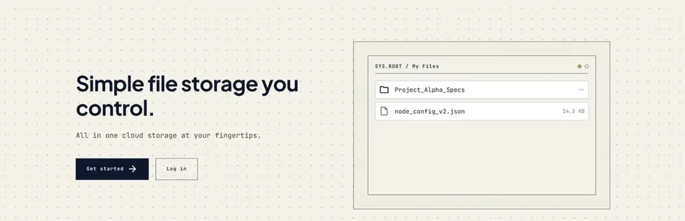

DBase
A self-hosted file storage and sharing app, like a small Google Drive you run on your own server.
Stack
Highlights
- Share files and folders with other users, or through public links with an optional password and expiry date
- Two-way folder sync from your desktop using a CLI client
- Thumbnails and in-browser previews for images, videos and PDFs
- Global search, tags, favorites, and a trash that keeps deleted items for 30 days
- Admin panel for managing users, storage quotas, backups and the audit log